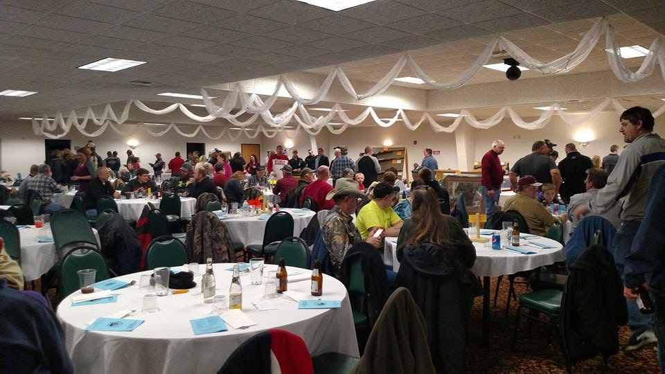

9145 County Line Rd, Platteville, WI 53818. Rural address — read the written directions, not just the GPS.
Targets on the outdoor 3D course
Indoor targets set for the Brush Shoot
Indoor range — lane count needed
On this ground since
From Platteville — north on Highway 81 about nine miles, then east on County Road A to County Line Road and south. The club is just outside Arthur, heading toward Rewey.
Those are the directions Grant County tourism and Grant County 4-H both publish for this address, so they're the ones people actually use. club to confirm and add any landmarks worth naming
From Dubuque — US 151 north to Platteville, then as above. drive time to confirm
From Dodgeville or Mineral Point — south and west through Rewey. needs real directions


Twenty yards, taped shooting positions, and heat that works in January. This is where the Vegas league shoots and where the Brush Shoot gets built every February.
Lane count and how members get in outside league nights still to be confirmed. needed
Forty targets set along walking trails through the timber, at unmarked distances. There's a raptor and a dinosaur out there — you'll see. Members put the course up in the spring and take it down in the fall.
Walk-through format, cards at the clubhouse.

Kitchen and food stand, meeting space, and a bathroom that isn't a portable toilet. Monthly meetings, the annual banquet and shoot registration all happen here — and once a year it fills up with brush and becomes a 3D course.
The club also hosts Grant County 4-H shooting practices, the Iowa-Grant Trap Team and Rewey Fire Department trainings.
A clean map of the trail loops and target numbers goes here — useful for first-timers and for the people who post shoot photos.
Send a photo of the map posted at the clubhouse, or a hand sketch, and I'll redraw it properly. needs course map
Go into the clubhouse first to pay and pick up a scorecard, even for a walk-through shoot. Somebody will point you at the first stake. parking details to confirm
The complete rules are posted in the clubhouse, and they'll go up here too.
Send a photo of the posted sheet and it goes on this page. needs the club's rules sheet